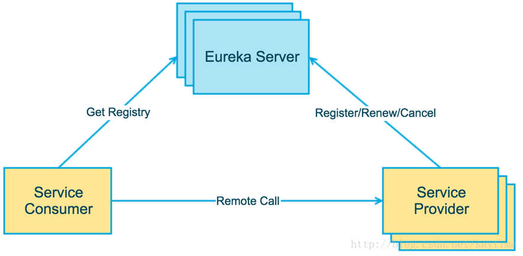
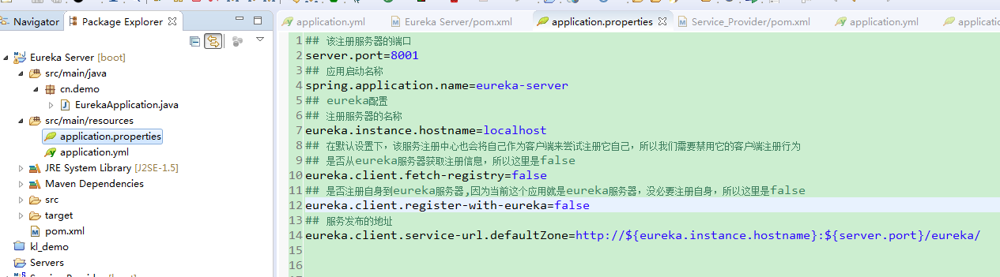
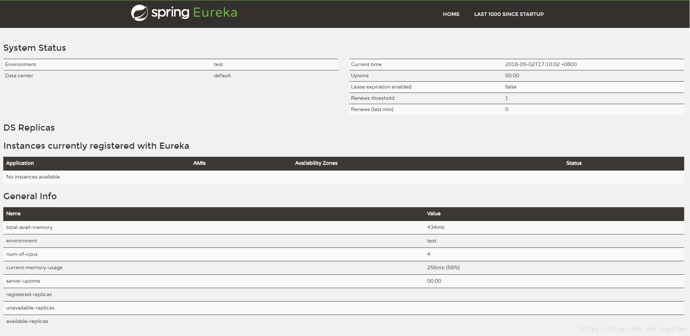
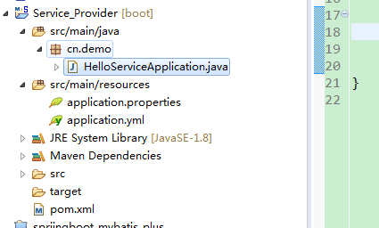
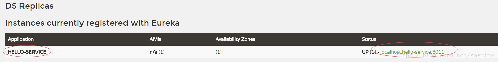

一、什么是服务注册与发现
Spring Cloud Eureka 模块提供的功能是被动式的服务发现。
服务注册：每个用户去聊天室服务器上注册。
服务发现：这样他的好友们就能看到你,你同时也将获取好友的上线列表.
微服务中，服务就相当于聊天室的用户，而服务注册中心就像聊天室服务器一样。
目前服务发现的解决方案有Eureka，Consul，Zookeeper等等。SpringCloud默认使用eureka作为服务注册中心。
二、Eureka使用过程

为了简介，以后的文章都不会贴出所有的Maven Pom依赖，除非特殊说明，否则版本都是以下面的版本为准。

简单来说就是三步：
1.Maven依赖
2.注册中心配置 application.properties
3.EnableEurekaServer服务类
pom依赖：
<project xmlns="http://maven.apache.org/POM/4.0.0" xmlns:xsi="http://www.w3.org/2001/XMLSchema-instance" xsi:schemaLocation="http://maven.apache.org/POM/4.0.0 http://maven.apache.org/xsd/maven-4.0.0.xsd">
<modelVersion>4.0.0</modelVersion>
<groupId>cn.demo</groupId>
<artifactId>springcloud_one</artifactId>
<version>0.0.1-SNAPSHOT</version>
<parent>
<groupId>org.springframework.boot</groupId>
<artifactId>spring-boot-starter-parent</artifactId>
<version>1.5.12.RELEASE</version>
<relativePath/> <!-- lookup parent from repository -->
</parent>
<properties>
<project.build.sourceEncoding>UTF-8</project.build.sourceEncoding>
<project.reporting.outputEncoding>UTF-8</project.reporting.outputEncoding>
<java.version>1.8</java.version>
<spring-cloud.version>Dalston.SR5</spring-cloud.version>
</properties>
<dependencies>
<dependency>
<groupId>org.springframework.cloud</groupId>
<artifactId>spring-cloud-starter-eureka-server</artifactId>
</dependency>
<dependency>
<groupId>org.springframework.boot</groupId>
<artifactId>spring-boot-starter-web</artifactId>
</dependency>
<dependency>
<groupId>org.springframework.cloud</groupId>
<artifactId>spring-cloud-starter-eureka</artifactId>
</dependency>
<dependency>
<groupId>org.springframework.boot</groupId>
<artifactId>spring-boot-starter-test</artifactId>
<scope>test</scope>
</dependency>
</dependencies>
<dependencyManagement>
<dependencies>
<dependency>
<groupId>org.springframework.cloud</groupId>
<artifactId>spring-cloud-dependencies</artifactId>
<version>${spring-cloud.version}</version>
<type>pom</type>
<scope>import</scope>
</dependency>
</dependencies>
</dependencyManagement>
<build>
<plugins>
<plugin>
<groupId>org.springframework.boot</groupId>
<artifactId>spring-boot-maven-plugin</artifactId>
</plugin>
</plugins>
</build>
</project>2.注册中心配置 application.properties
## 该注册服务器的端口
server.port=8001
## 应用启动名称
spring.application.name=eureka-server
## eureka配置
## 注册服务器的名称
eureka.instance.hostname=localhost
## 在默认设置下，该服务注册中心也会将自己作为客户端来尝试注册它自己，所以我们需要禁用它的客户端注册行为
## 是否从eureka服务器获取注册信息，所以这里是false
eureka.client.fetch-registry=false
## 是否注册自身到eureka服务器,因为当前这个应用就是eureka服务器，没必要注册自身，所以这里是false
eureka.client.register-with-eureka=false
## 服务发布的地址
eureka.client.service-url.defaultZone=http://${eureka.instance.hostname}:${server.port}/eureka/3. @EnableEurekaServer：
import org.springframework.boot.SpringApplication;
import org.springframework.boot.autoconfigure.SpringBootApplication;
import org.springframework.cloud.netflix.eureka.server.EnableEurekaServer;
@SpringBootApplication
@EnableEurekaServer
public class EurekaApplication {
public static void main(String[] args) {
SpringApplication.run(EurekaApplication.class, args);
}
}
启动访问：http://localhost:8001
可以看到Application中No instances available，因为还没有任何服务注册。接下来我们写一个用户服务注册到eureka注册中心、
这里简单写一个服务项目，Service_Provider，为了看起来简单，接口也直接放在启动类里面。

pom.xml ：
<dependency>
<groupId>org.springframework.boot</groupId>
<artifactId>spring-boot-starter-web</artifactId>
</dependency>
<dependency>
<groupId>org.springframework.cloud</groupId>
<artifactId>spring-cloud-starter-eureka</artifactId>
</dependency>
application.properties：
## 该服务发布的端口
server.port=8011
## 注意这里是作为服务注册名称，在eureka注册中心注册这个名称，自动转化为全大写，之后调用服务用服务名调用
spring.application.name=user-service
eureka.client.register-with-eureka=true
eureka.client.fetch-registry=true
## 注册服务中心的配置
eureka.client.service-url.defaultZone=http://localhost:8001/eureka/
启动类：
import org.springframework.boot.SpringApplication;
import org.springframework.boot.autoconfigure.SpringBootApplication;
import org.springframework.cloud.netflix.eureka.server.EnableEurekaServer;
import org.springframework.web.bind.annotation.RequestMapping;
import org.springframework.web.bind.annotation.RestController;
@SpringBootApplication
@EnableEurekaServer
@RestController
public class HelloServiceApplication {
public static void main(String[] args) {
SpringApplication.run(HelloServiceApplication.class, args);
}
@RequestMapping("hello")
public String hello (String name) {
return "hello, " + name;
}
}
启动服务，然后继续查看eureka注册中心，刷新，查看变化，发现Hello-SERVICE服务已经注册在注册中心：

测试用户服务：
http://localhost:8011/hello?name=eureka
服务消费方式有restTemplate+ribbon以及feign，所以下章在讲如何消费注册中心的服务。